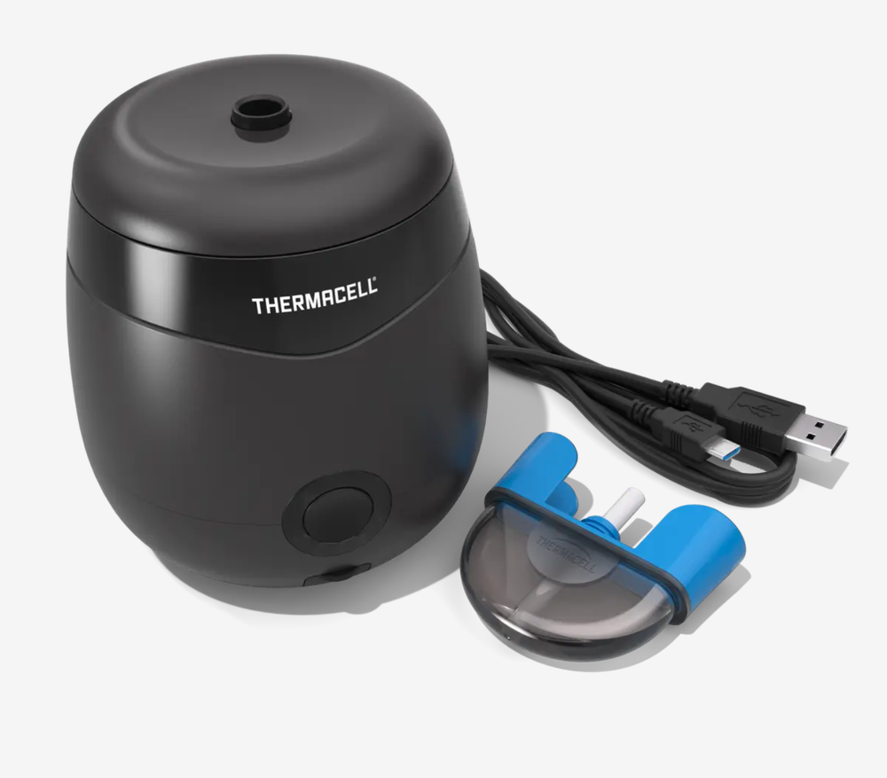
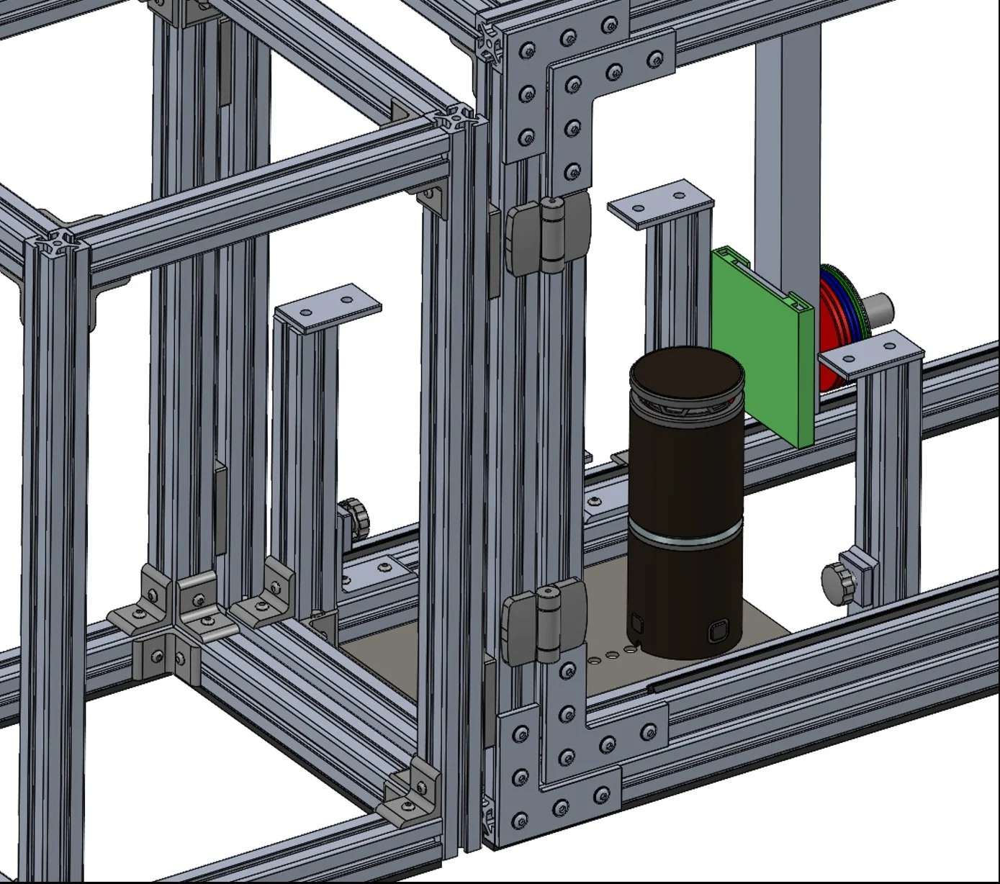
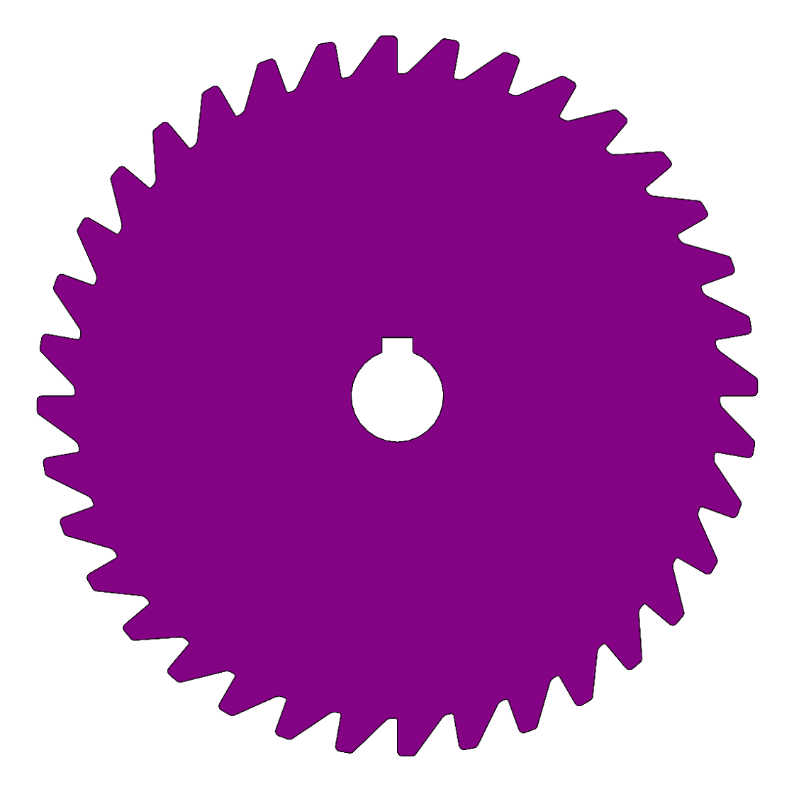
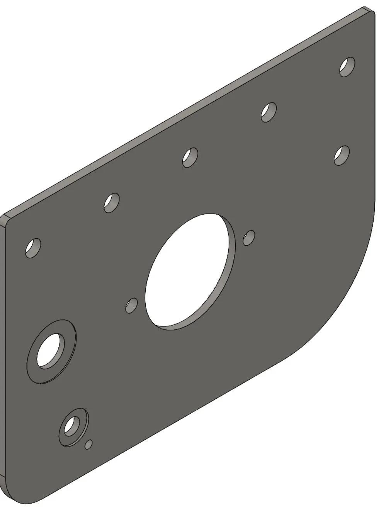
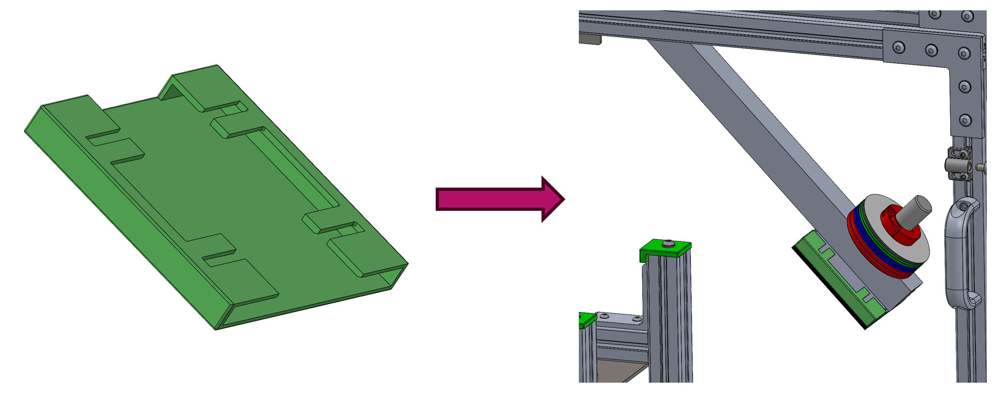
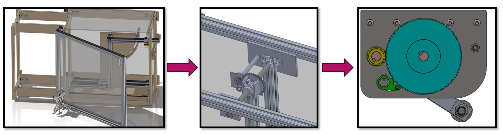
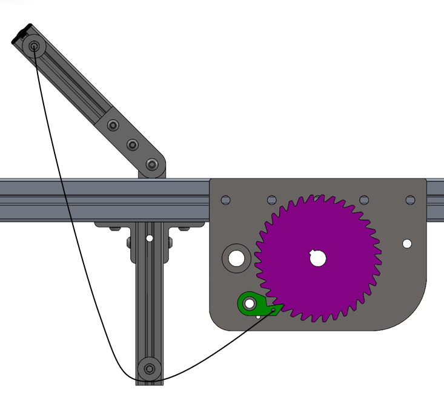

Thermacell Repellents: Impact Tester
Background
Thermacell Repellents designs spatial mosquito repellers for use in various outdoor environments. The repellers heat a chemical repellent causing it to disperse, resulting in a mosquito-free zone.
Over time, these repellers are exposed to wear and tear including being dropped, knocked over, and hit accidentally. During my co-op at this company, I was tasked with designing a custom fixture to recreate common impact forces that a repeller would be exposed to. The reference force I used was a device being struck by a soccer ball.

Constraints
The main design requirements for the impact tester were:
- The new design must improve upon the limitations of the previous design
- The fixture must be easy to move and store. Weight must be kept low in order to move it easily, and general size must be small enough to fit under a work bench.
- The fixture must be compatible with all Thermacell products.

Custom Designs
Custom parts were a huge part of this project. I designed various plates, gears, and plastic components to ensure test repeatability and safety in use. These design objectives could not be fulfilled from purchased components.

Steel gear designed to fit custom pawl. Gear allows impact arm to be raised to exact 10 degree increments.

Steel plate designed to house rotating shafts, roller bearings, and mounting brackets.

Plastic (PET) plate cover designed to be both flexible and take the main force of the impact. This piece allowed me to recreate any impact environment by attaching various surfaces (i.e. rubber)
Design Iterations
- Brainstormed and refined designs for the fixture, evolving from initial wooden concepts to a modular aluminum frame using 8020 for enhanced strength and accuracy
- Transitioned from manual operation to a mechanical gear system with adjustable impact plates and modular arms for customizable weights and surfaces.
- Addressed assembly challenges by finalizing custom part tolerances and testing ideas through 3D printing

Issues
Issues came up during the assembly of this fixture. One major problem I encountered was that there was too much force on the pawl (seen in green) to dislodge it from the gear (seen in purple). A redesign of the pawl geometry with more rounded corners, and perhaps contact at a different angle is necessary going forward. These changes along with some more lubrication will make the disengagement process much smoother.

Results
The completed impact tester gave Thermacell its first standardized method for conducting repeatable durability tests across its product line. The fixture can simulate a range of impact scenarios by adjusting the arm angle in 10-degree increments and swapping out the modular impact plate surfaces. Before this project, there was no consistent way to test how products held up to common impacts like being knocked over or struck.
The pawl disengagement issue identified during assembly remains an open item. A redesign with rounded geometry and a revised contact angle would reduce the force needed to release the arm and make the fixture safer and smoother to operate. With that fix, the tester is ready for integration into Thermacell's QA workflow for both current and future products.